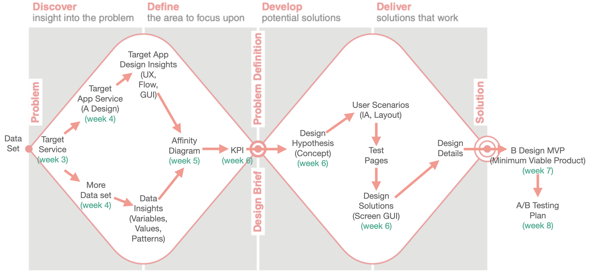

4 Week 4. Project brief, Data curation
4.0.1 BI(Business Intelligence), 데이터 분석 서비스 사례
- 데이터 관련 교육자료
Data Journalism | Google News Initiative Training Center
- Google Analytics (분석 사례 추가 예정)
- Power BI
- Tableau(태블로)
- 웹 비즈니스 데이터 분석 서비스
여기까지 모든 서비스에 대한 설명 추가
4.0.2 디자인 개선안(B안) 개발(Build)을 위한 디자인 프로세스

- UX는 흉내내기는 쉽지만, 잘하기는 어렵습니다.
- 서비스 필요성을 설명하는 데이터에 집착하지 말것.
- 서비스의 목적(사용자 경험)에 집중하여 구체적인 해석을 해야함.
- 리서치의 논리 구조와 흐름에 맞게 진행. 여기서 이 말을 하는 것이 말이 되는지 확인!
5주 및 6주 준비> 해당 내용을 2주간 필요한 부분 보충해가며 진행함. 주별 과제 제출은 진행한 내용 업로드
- 관심 주제 데이터 분석 자료를 적용할 타겟 앱서비스를 확정하고, 타겟 앱 서비스 현황에 대하여 자세한 데이터 리서치를 수행함.
- 타겟 서비스 관련한 주요 데이터 분석 내용 요약 (각 변수별 값 현황, 사용자 데이터, 사용 상황 데이터, 서비스 내용 별 데이터의 현황 요약, 주요 변수의 변화 패턴, 변수별 상관관계 (양/음, 강한/약한, 관계없음 등)
- 타겟 앱 서비스의 사용자 경험을 경로별, 화면별로 분석하여 인사이트 도출
- 주제 데이터, 타겟 앱 분석 결과의 패턴 (특징) 및 디자인 인사이트들을 종합하여 어피니티 다이어그램 구성 (5주 기준 범위, 마감일 10월 11일 20시)
- 어피니티 다이어그램을 통하여 타겟 앱 서비스의 KPI를 도출(정량 측정 가능한 지표, 여러 개 일 수 있음). 찾기 어려우면 주요 서비스들을 KPI로 지정함. KPI 데이터는 어떻게 수집할 수 있을지 기획.
- 변수 패턴을 바탕으로 목표 사용자 경험을 구현해주는(KPI를 개선해주는) 디자인 컨셉 개발
- 디자인 컨셉(가설)은 단순하게 ’무엇을 디자인 하겠다’가 아니라 ’어떤 사용자 경험을 하도록 하겠다’가 나와야함, 단순 GUI 개선이 아니라 사용자 경험 데이터(KPI)가 달라질 수 있도록 함.
- 타겟 앱에서 디자인 개선할 사용자 시나리오 선정, 시나리오가 적용되는 개별 서비스나 페이지 선정
- KPI와 관련 없는 부분은 손대지 않아도 됨 (6주 기준 범위)
금요일반 4주 과제 피드백 > 각 주별 과제 피드백 체크리스트는 별도 레이아웃 편집 예정
- 리서치 활동들의 연계성, 인과관계가 중요함.
- 각 활동을 왜하는지, 어떻게 했는지, 그래서 무엇을 알았는지, 알게된 것은 어떻게 적용하는지가 공감되도록 진행
- 데이터 출처 서술 필요
(본 과제에서 설문, 인터뷰, 관찰은 요구 사항이 아님)
설문/ 인터뷰 전 왜 이걸 하는지(무엇을 알기 위해서 하는지)가 분명해야함. 사용자 세그먼트 활용 여부 결정
설문/ 인터뷰의 목적에 맞는 대상자에게 목적에 맞는 질문 내용을 구성해야함
설문은 응답자 정보 중요 (누가, 몇 명이나 했나)
진행 과정(질문)과 항목별, 주제별 결과 분석을 연계하여 설명
앱 분석은 페이지별 분석이나 앱 구성요소별 분석이 아닌 사용자 경험의 행동 단위를 따라 분석 (본인이 퍼소나에 해당하지 않는 경우 퍼소나 설정하여 분석하는 것은 가능), 디자인 구성 요소 중심으로 평가하지 않음
어피니티 다이어그램은 큰 카테고리가 사용자 경험 중심의 문장이 되도록 구성(사용자가 —할 때 —하다), 디자인 구성 요소별로 분류하지 않음
어피니티 다이어그램에서 중요한 사용자 경험의 문제와 문제별 연계 관계가 나와야함.
어피니티 다이어그램의 주요 문제를 디자인 컨셉으로 연계함.
KPI는 본 프로젝트에서 설문 형식으로 측정 가능한 항목으로 설정해야함. (설문 형식으로 평가할 것이기 때문에)